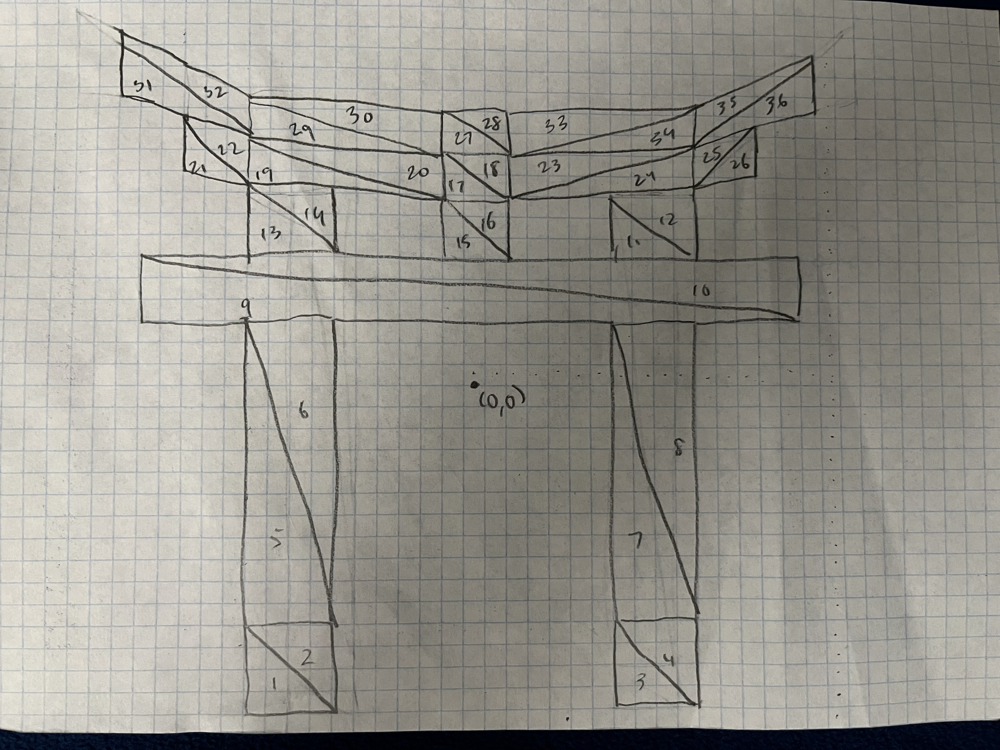

Bruce Tang
brmtang@ucsc.edu
Clear Canvas Draw Picture
Drawing Mode:
Shape Color:
Shape Size: (Circles) Segments Count
This is what I have added for "Awesomeness." Music Below is my drawing on paper. 